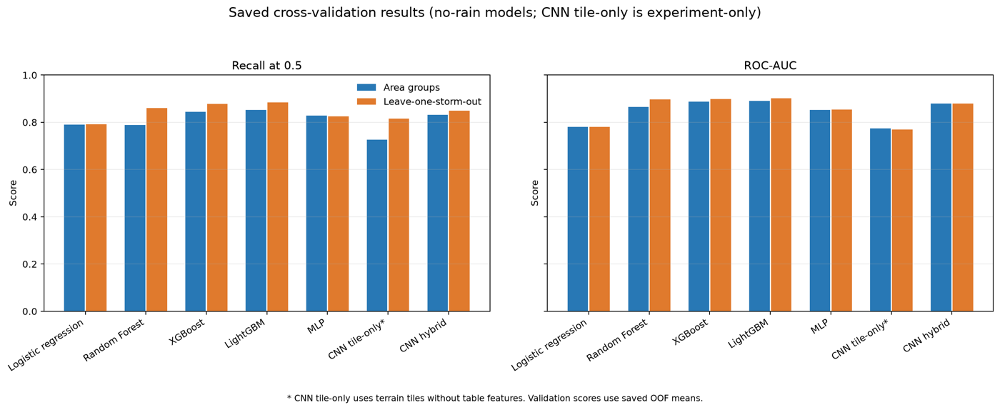
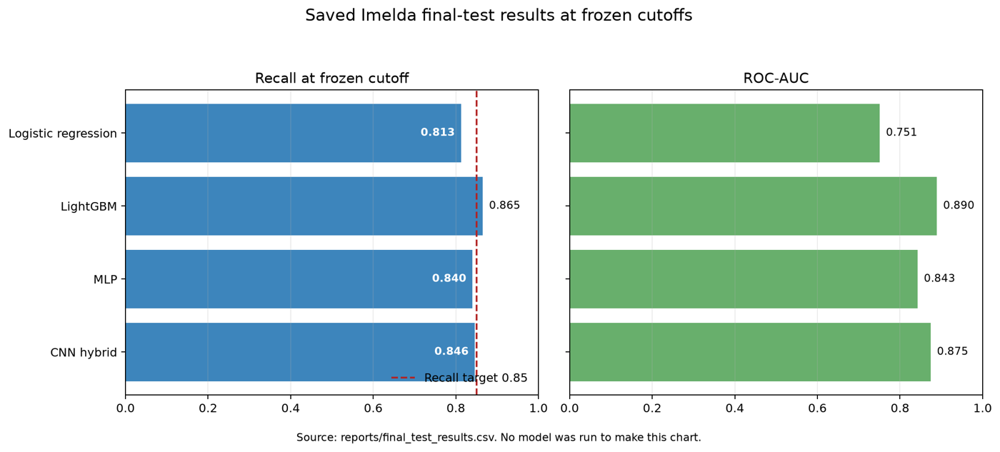

Purple = flood reports in 2, 3 or all 4 storms (darker = more)
Dot = a 311 flood report in
Blue street = flooding reported there (click a dot)
No color = not sampled · scroll to zoom
Each dot is a 311 flood report. Hover one to see the street, click to zoom in.
The Project
Why we built FloodSense
Houston floods again and again. We used real flood reports and public land data to show which areas look like the places that flooded before, and why.
1
The problem
Four major floods hit Houston in five years. During each one, people called the city's 311 line to report flooding, but nobody turned those calls into a simple map residents can read.
2015 Memorial Day Flood2016 Tax Day Flood2017 Hurricane Harvey2019 Tropical Storm Imelda
2
Our question
Does a place's land look like a flood hotspot, and what makes it look that way?
ResidentsCheck their own area.
City plannersPrioritize drainage work.
First respondersKnow repeat trouble spots.
3
The data we used
Five public datasets, all lined up on one map grid:
311 flood reportswhere flooding was reportedCity of Houston
Elevation (1 m)elevation & slopeUSGS
Streams & bayousdistance to waterUSGS NHD
Land covertype of developmentNLCD
Major highwayscloseness to highwaysOpenStreetMap
We also tested rainfall (NOAA), but left it out: it varied too much between storms and made results inconsistent.
4
How many rows
Each row is one location during one storm: either a flooded spot (a 311 report) or a nearby spot with no report, roughly half and half.
Raw training rows (2015–2017)85,738
After removing duplicates76,875
Clean training set66,514
Hidden test set (Imelda 2019)19,164
See the details
Rows per storm
Storm
Used for
Flooded
Total rows
Memorial Day Flood 2015
Training
10,998
21,780
Tax Day Flood 2016
Training
11,124
21,850
Hurricane Harvey 2017
Training
11,833
22,884
Tropical Storm Imelda 2019
Final test
9,746
19,164
Cleaning steps
Step
Removed
Rows left
Remove duplicate location + storm rows
8,863
76,875
Keep only developed land for "no report" spots
10,310
66,565
Drop "flooded" spots outside developed land
51
66,514
The Imelda test set went through the same steps (24,852 → 19,164). Every location also got a ~1 km grid ID (4,492 squares).
5
What we found
Prior work on Houston 311 data reached about 80% accuracy. FloodSense matched it on a storm it had never seen.
What the map can't tell you
It's not a forecast. It shows which land looks vulnerable, not how a future storm will go.
It's not about your exact house. Scores are averages over ~1 km areas.
311 reports aren't every flood. No report doesn't prove no flooding.
One test storm. Imelda is a single storm, mostly in areas seen during training.
Five steps. Each one has a short summary; open "See the details" for the full numbers.
Data66,514training rows
Split3ways to test
Train8models compared
Test87%floods caught
ExplainSHAPwhy, for every spot
1
Data
66,514 rows from three storms (2015–2017), each with 5 land features: elevation, slope, distance to bayou, land cover and closeness to highways. Built in 12 step-by-step Jupyter notebooks.
2
Split
We tested the models three ways so the scores are honest:
New places
Hold out whole ~1 km areas (5 folds).
New storms
Train on 2 storms, test on the 3rd.
Final test
Imelda 2019, hidden until the end, run once.
See the details
Area-group 5-fold cross-validation grouped rows by grid ID; leave-one-storm-out used 3 folds. Scaling and one-hot encoding were fitted inside each training fold only, so nothing leaked from test rows. Each model's cutoff is the highest one that still catches at least 85% of flooded spots in the area folds (LightGBM: 0.50). All choices were frozen before the Imelda test, and a lock file prevents running it twice.
3
Train
We compared 8 models, from simple to deep learning. LightGBM scored best on both new places and new storms, so it powers the map.
Mean validation scores, no-rainfall versions, default 0.5 cutoff. The dummy baseline just predicts the overall share of flooded spots.
Settings
LightGBM: 300 trees, learning rate 0.1. MLP: layers of 64 and 32, dropout 0.2, Adam 0.001, 25 epochs. CNNs: 3 conv layers (16/32/64), 32×32 terrain tiles, 20 epochs. All with random seed 42.
Tuning experiment
A RandomizedSearchCV over 7 LightGBM settings (2,916 combinations, 20 sampled per search) inside nested cross-validation did not beat the original model on any of 12 average scores, so we kept the original.

Validation results for every model.
4
Test
87out of every 100 flooded spots during Tropical Storm Imelda were caught, on a storm the model had never seen. Overall accuracy: 82%.
See the details
Model
Cutoff
Recall
Precision
Accuracy
ROC-AUC
Logistic regression
0.44
0.81
0.66
0.69
0.75
LightGBMChosen
0.50
0.87
0.80
0.82
0.89
Neural network (MLP)
0.47
0.84
0.74
0.77
0.84
CNN hybrid
0.47
0.85
0.77
0.80
0.87

One-time Imelda test at each model's frozen cutoff.
5
Explain
SHAP shows which features push each prediction up or down. This is what powers the "why" on the map. The biggest factors:
Elevation1.33
Near major highways0.72
Terrain slope0.65
See the details
Land cover (low-intensity)0.19
Distance to bayou0.15
Mean absolute SHAP value (log-odds). SHAP shows what the model relies on, not what causes flooding.